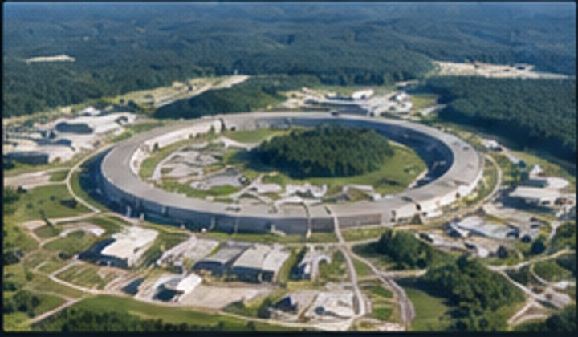
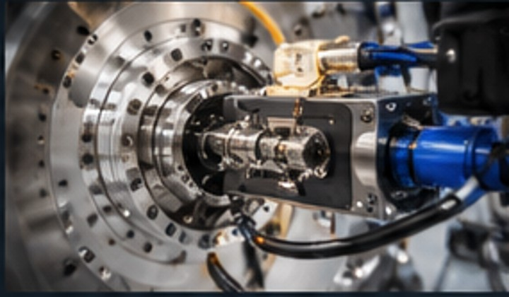
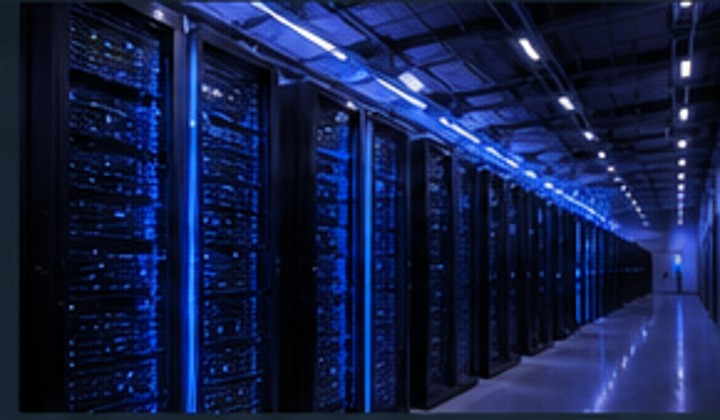
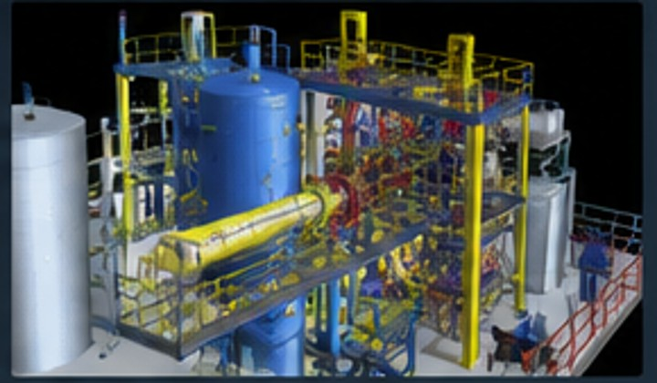
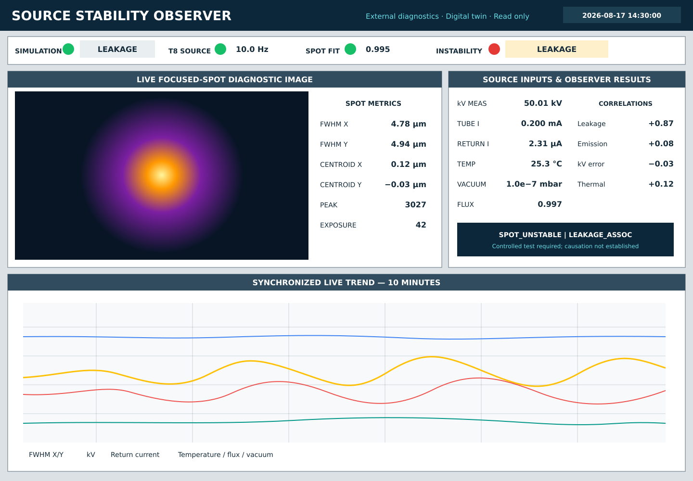
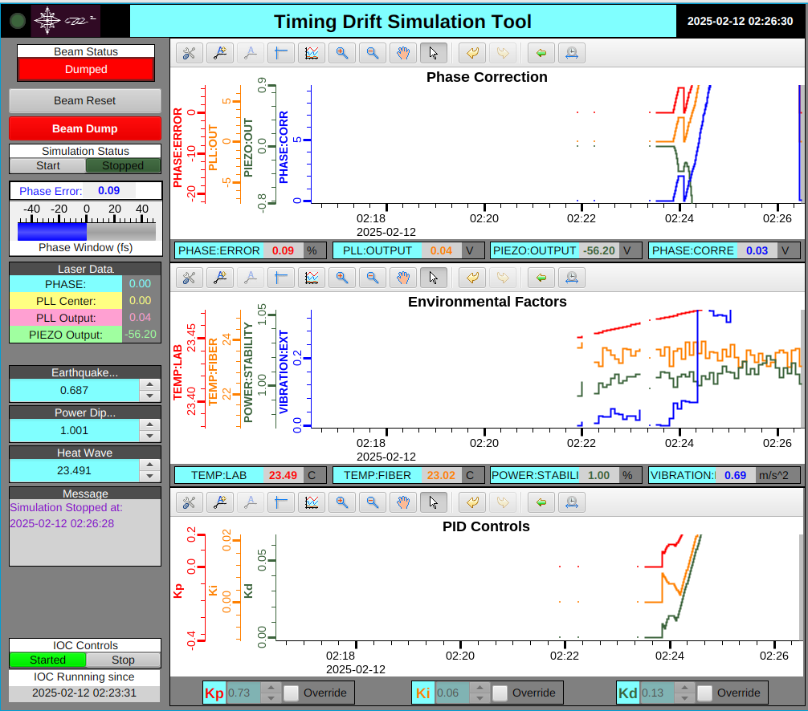

Control Systems
Design, integration and modernization for complex facilities.
SCIENCE · INDUSTRY · INFRASTRUCTURE
Engineering, AI, and automation for scientific facilities, critical infrastructure, and complex industrial systems.
Design, integration and modernization for complex facilities.
From sensors to data, turning measurements into understanding.
Model. Analyze. Optimize. Bridge the physical and digital.
Practical AI for engineering, operations and knowledge systems.
Reliable, scalable systems for mission-critical environments.
Where experience matters
Critical systems demand more than software. They require an understanding of equipment, operators, data, risk, and the mission the facility exists to accomplish.

Accelerators, beamlines, experiments and facility controls.

X-ray, neutron and high-energy instrumentation.
Automation, modernization and diagnostics.

Monitoring, controls and operational resilience.

Controls, simulation and instrumentation for next-generation systems.
Demonstrated engineering

Correlating X-ray source variability with external signals using synchronized acquisition, quality gates and bounded statistics.
View brief →
Modeling and validation for complex timing systems with EPICS-based simulation.
View brief →Modern control-system patterns for instrumentation, operator interfaces and maintainable operations.
Explore controls →Centralized visibility for on-premises systems without moving deterministic control into the cloud.
View brief →START WITH THE SYSTEM